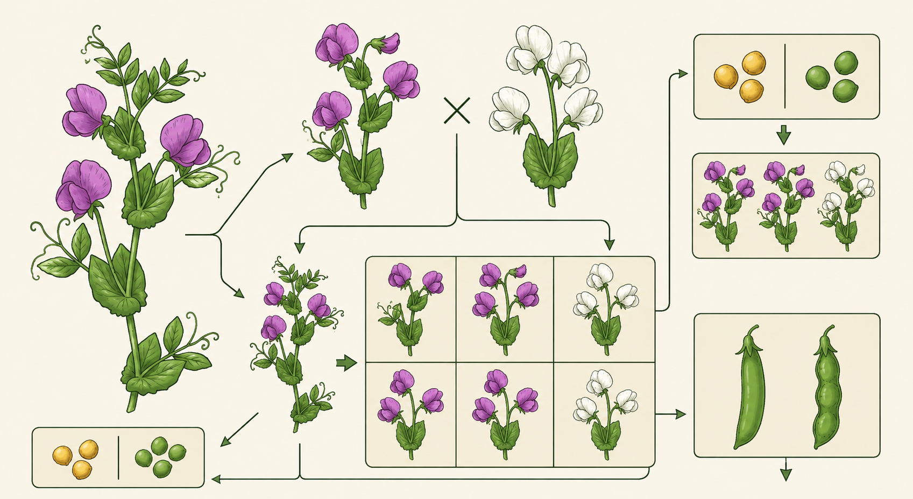

การถ่ายทอดของเมนเดล (ยีนเด่น-ยีนด้อย)
การถ่ายทอดลักษณะทางพันธุกรรม คือ กระบวนการที่สิ่งมีชีวิตส่งต่อข้อมูลทางพันธุกรรมจากพ่อแม่ไปยังลูกผ่านเซลล์สืบพันธุ์ ทำให้ลูกมีลักษณะบางอย่างคล้ายคลึงกับพ่อแม่ แต่ก็อาจมีความแตกต่างกันได้ การศึกษาการถ่ายทอดลักษณะทางพันธุกรรมมีนักวิทยาศาสตร์คนสำคัญคือ เกรเกอร์ โยฮันน์ เมนเดล (Gregor Johann Mendel) ซึ่งได้รับการยกย่องว่าเป็นบิดาแห่งพันธุศาสตร์
เมนเดลทดลองผสมพันธุ์ถั่วลันเตาและศึกษาลักษณะต่าง ๆ เช่น ความสูงของต้น สีเมล็ด และรูปร่างเมล็ด จากการทดลองทำให้ค้นพบกฎการถ่ายทอดลักษณะทางพันธุกรรมที่สำคัญ ได้แก่ กฎการแยก และกฎการรวมกลุ่มอย่างอิสระ
แอลลีลเด่น (Dominant allele) คือ รูปแบบของยีนที่สามารถแสดงลักษณะออกมาได้เมื่อมีอยู่เพียงหนึ่งแอลลีล ส่วนแอลลีลด้อย (Recessive allele) คือ รูปแบบของยีนที่จะแสดงลักษณะออกมาเมื่อมีแอลลีลด้อยทั้งสองแอลลีลในกรณีการถ่ายทอดแบบเด่นสมบูรณ์
ตัวอย่างการถ่ายทอดลักษณะต้นถั่วสูงและต้นถั่วเตี้ย กำหนดให้ T แทนแอลลีลต้นสูง และ t แทนแอลลีลต้นเตี้ย
TT หมายถึง ต้นสูง
Tt หมายถึง ต้นสูง
tt หมายถึง ต้นเตี้ย
จากตัวอย่างจะเห็นว่าแอลลีลเด่นสามารถแสดงลักษณะออกมาได้แม้มีเพียงหนึ่งแอลลีล ส่วนแอลลีลด้อยจะแสดงออกเมื่อมีแอลลีลด้อยทั้งคู่ อย่างไรก็ตาม คำว่า “ยีนเด่น” ไม่ได้หมายถึงยีนที่แข็งแรงกว่า หรือมีประโยชน์มากกว่ายีนด้อย และลักษณะต่าง ๆ ของมนุษย์ เช่น ผมหยิก ตาสองชั้น หรือการมีลักยิ้ม ไม่ควรถูกจัดว่าเป็นลักษณะเด่นหรือด้อยเสมอไป เพราะหลายลักษณะถูกควบคุมโดยยีนหลายตำแหน่งและสิ่งแวดล้อมร่วมกัน การศึกษาของเมนเดลมีความสำคัญอย่างมากต่อวงการวิทยาศาสตร์ เนื่องจากช่วยให้นักวิทยาศาสตร์เข้าใจหลักการถ่ายทอดลักษณะทางพันธุกรรม และนำไปประยุกต์ใช้ในการปรับปรุงพันธุ์พืชและสัตว์ รวมถึงการศึกษาความผิดปกติทางพันธุกรรมในมนุษย์